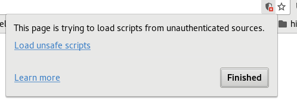

Pretty html slides made simple with reveal.js and pandoc
While there are plenty of good ressources available on how to use reveal.js, this tutorial will set you up with all neccessities for a scientific presentation in only a few minutes. No prior knowledege on JavaScript or html needed.
For a taste of what the result will look like check out
Getting started
The most important features are demonstrated by example and are meant as a starting point to explore and build your own presentation.
To get the example running, install pandoc and execute the following commands to clone the git repository and convert the markdown file to a beautiful html presentation.
>>> git clone https://github.com/TammoR/pandoc_to_reveal
>>> cd pandoc_to_reveal
>>> pandoc -t revealjs -s -o myslides.html pandoc_test.md -V revealjs-url=http://lab.hakim.se/reveal-js -V theme=sky --mathjax --slide-level=2 --css pandoc_test.css -V transition=cube
This should create myslide.html. To view thre presentation open the .html output file in any browser.
Togehter with the raw markdown file pandoc_test.md this demonstrates the following features:
- including verbatim code
- including images
- formatting multiple columns
- rendering maths using LaTeX
- fragmented appearance of slide elements
To modify the presentation edit the corresponding .md file. A good markdown cheat-sheet is available here.
You can render a html file that is on github using github’s rendering tool and appending the URL.
http://htmlpreview.github.io/?https://github.com/TammoR/pandoc_to_reveal/blob/master/pandoc_test.html
Get a pdf version of your slides
Open your slides in the browser and add ?print-pdf to the URL. E.g. using the htmlpreview tool:
http://htmlpreview.github.io/?https://github.com/TammoR/pandoc_to_reveal/blob/master/pandoc_test.html?print-pdf
Then you can use your browsers print function (might need some adjustment of margins) to print to PDF.
Change appearance
You can change the theme and the slide transitions by adjusting the corresponding options in the pandoc command. All options are documented in the reveal.js project page.
Further modifications can be made by editing the local css file (pandoc_test.css).
Section structure
The intended section depths is defined by the --slide-level=2 option.
Content should only be put under the lowest level slides (this limitation is discussed here.
Latex rendering issues
If you experience trouble with LaTeX rendering check whether the matjax URL In your html file is the same as below. Otherwise you can the correct mathjax link manually:
--mathjax="http://cdn.mathjax.org/mathjax/latest/MathJax.js?config=TeX-AMS-MML_HTMLorMML"
The full compilation command then reads:
pandoc -t revealjs -s -o myslides.html pandoc_test.md -V revealjs-url=http://lab.hakim.se/reveal-js -V theme=sky --mathjax="http://cdn.mathjax.org/mathjax/latest/MathJax.js?config=TeX-AMS-MML_HTMLorMML" --slide-level=2 --css pandoc_test.css -V transition=cube
Another reason math rendering might fail is that your browser blocks the execution of the necessary scripts. In Chrome and Firefox unsafe scripts can be allowed in the address line.
